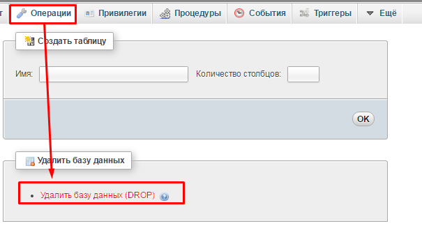
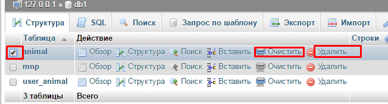
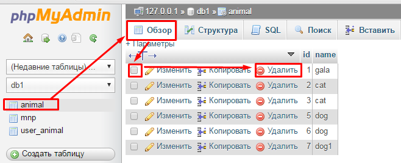
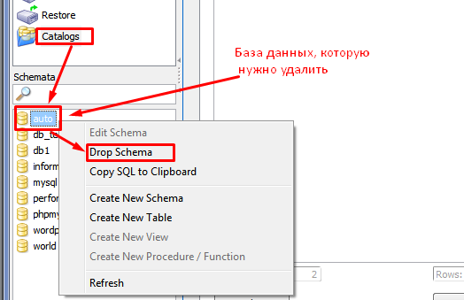

Главная → Как удалить эту БД
Как удалить БД
Заходим в интерфейс phpMyAdmin, слева выделяем «провинившуюся» базу. Затем в основном меню сверху переходим через пункт «Операции» и справа выбираем «Удалить базу данных (DROP)».

Иногда нужно произвести неполное удаление данных MySQL (конкретную таблицу базы). Данная программа предоставляет для этого встроенный функционал.
В списке слева снова выбираем нужную БД. Затем в списке, который отображается во вкладке «Структура» выделите таблицу и нажмите слева ссылку «Удалить». Если требуется просто стереть из таблицы все строки, но не удалять ее, то для этого воспользуйтесь ссылкой «Очистить».

Чтобы удалить определенные записи таблицы, перейдите справа по ссылке. После этого по вкладке «Обзор» (верхнее меню), выделите в таблице нужные строки и нажмите на «Удалить».

MySQL Administrator также умеет «избавляться» от ненужных данных. Чтобы удалить БД MySQL, зайдите в программу под учетной записью администратора СУБД или пользователя, наделенного привилегией на выполнение команды DROP. В меню слева нажмите пункт «Schema». Визу выделите нужную базу, кликните правой клавишей и выберите команду «Drop Schema».

Так же можно удалить БД через запрос
DROP {DATABASE | SCHEMA} [IF EXISTS] db-name
Теперь ВЫ знаете как избавиться от этой *непонятной БД